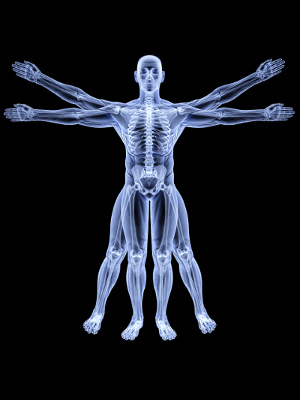

Kyani健康三角组合与骨骼健康

我们很少关心我们的骨骼健康，但患上骨折、骨质疏松这些病症的患者却整天因骨骼的健康问题而困扰。他们期待痛苦最小化，加速骨骼的愈合，以及通过矿物质的补充增强骨骼，获得康复。
如果我们想理解Kyani健康三角组合产品是如何促进骨折的恢复、增强骨骼的，那么我们首先要简单地了解一些骨骼健康方面的知识。首先骨细胞一共分三种，第一种叫做成骨细胞，它是骨形成的主要功能细胞；第二种叫做破骨细胞，它通过骨吸收实现骨重建修复骨骼，这种骨重建过程无论对成人还是孩子都是不断地进行的。第三种细胞叫做骨细胞，它存在于很小的、内含体液的腔中。当我们走路、举重、跑步的时候，体液流动会与细胞表面产生摩擦力，医学上叫做“流体剪切力”，这一过程会引起一氧化氮的释放，一氧化氮则会刺激成骨细胞产生新的、更坚固的骨；同时抑制破骨细胞的骨吸收过程以免此过程进行过快以免失衡。
以上的一氧化氮的调节使骨骼的代谢达致平衡，从而保持骨骼的坚固。长期卧床不起的病人会引起骨骼弱化，处于微重力条件下的宇航员也会引起这样的问题。这是因为他们的体液缺乏流动，与骨细胞外膜之间的摩擦停止，会造成一氧化氮的产生大大减少。骨质疏松的患者，一氧化氮的产生也是不断减少的，酸中毒也会加快一氧化氮的减少。使用Kyani健康三角组合产品则可以改变这些状况。
Kyani尼多乐含有大量的硝酸盐和亚硝酸盐化合物，是产生一氧化氮的原料。使用Kyani尼多乐会“欺骗”成骨细胞和破骨细胞，让它们认为骨细胞还在产生足够的一氧化氮，从而使骨重建过程激活，加速骨折的康复过程，骨质疏松症也会得以最大程度的缓解。
了解到一氧化氮的作用，我们再谈谈阿巴斯博士经常提到的有关Kyani产品防治酸中毒症的作用。糖尿病患者产生的一氧化氮比正常人要少,且常常伴随酸中毒症状。如果他们这时不小心骨折，那么恢复过程恐怕就要很久了。绝经后骨质疏松症也会伴随酸中毒，情况和上面说的相似。贫血患者的情况更加糟糕，他们体内的一氧化氮载体比较少，无法给身体提供足够的一氧化氮；如果他们还有酸中毒症，本来就无法产生足够的一氧化氮，再加上一氧化氮运输受阻，那么患者的循环与骨病就便会陷入恶性循环。这类问题的患者如果每日服用Kyani尼多乐，从中获得大量的一氧化氮前体，就会帮助自身打破这样的现状，无论男女老少都会获得真正的全方位的骨骼健康。Kyani产品的功效不止如此，它对糖尿病等问题都有很好的防治效果。
Kyani新乐思和Kyani新舒康对骨骼健康也有很多的好处，Kyani新乐思中的维生素A、维生素B6、维生素B12、维生素D都是众所周知的健骨维生素。妇女如果缺乏维生素B12的话，会更容易骨折。Kyani新乐思中的十种超级食物可以保护骨细胞用来产生一氧化氮的酶，还可以预防炎症条件下的酸中毒。
Kyani新舒康中的欧米伽3（Omega-3）脂肪酸及生育三烯酚对骨骼健康很有利。鱼油成分的日常摄取会促进钙质的吸收，增加骨钙及骨密度，欧米伽3脂肪酸可以抑制细胞因子从而减轻提早绝经引起的骨炎，也可以减缓绝经后的骨质流失。虽然没有研究结果证明欧米伽3脂肪酸可以减缓更年期的骨质流失，但是相关的研究已经展开，我们可以进一步关注。另外，有研究发现欧米伽3脂肪酸的摄取可以平衡欧米伽6与欧米伽3的比例，这时再加上维生素E对脂质过氧化的阻碍作用，对钙质的吸收和骨密度的增加能起到非常积极的作用。
肌腱和韧带
我们骨骼之间的连接都是靠韧带实现的，骨骼与肌肉之间的连接则靠肌腱。撕裂韧带或肌腱是非常严重的。然而，一氧化氮对韧带或肌腱的恢复作用是很有名的。如果你和家人正在此类疾病的痛苦之中，相信Kyani健康三角组合真正地会让我们快速彻底地康复。
综上所述，我们要用最好的食物来滋养我们的骨骼。Kyani健康三角组合产品提供了非常丰富的成分修复、滋养、保护我们的细胞，让我们远离骨折、骨质疏松、酸中毒等症的痛苦，伴随Kyani，让我们和家人的骨骼健康一生！